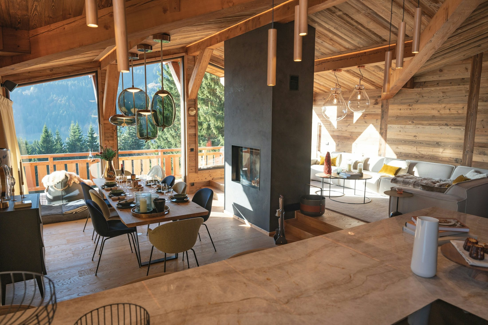
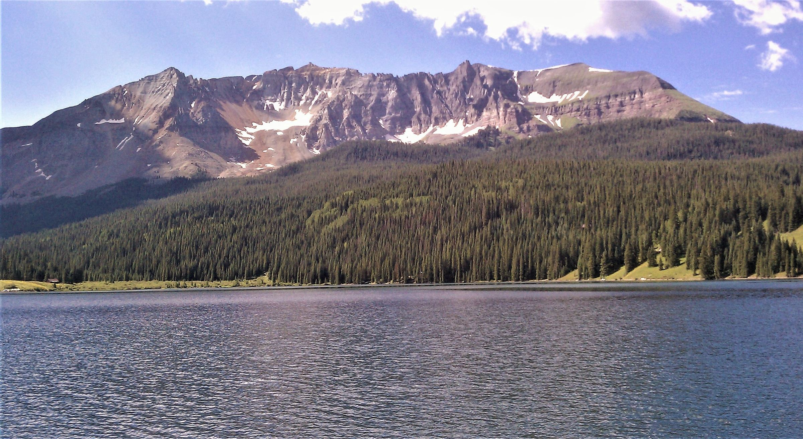
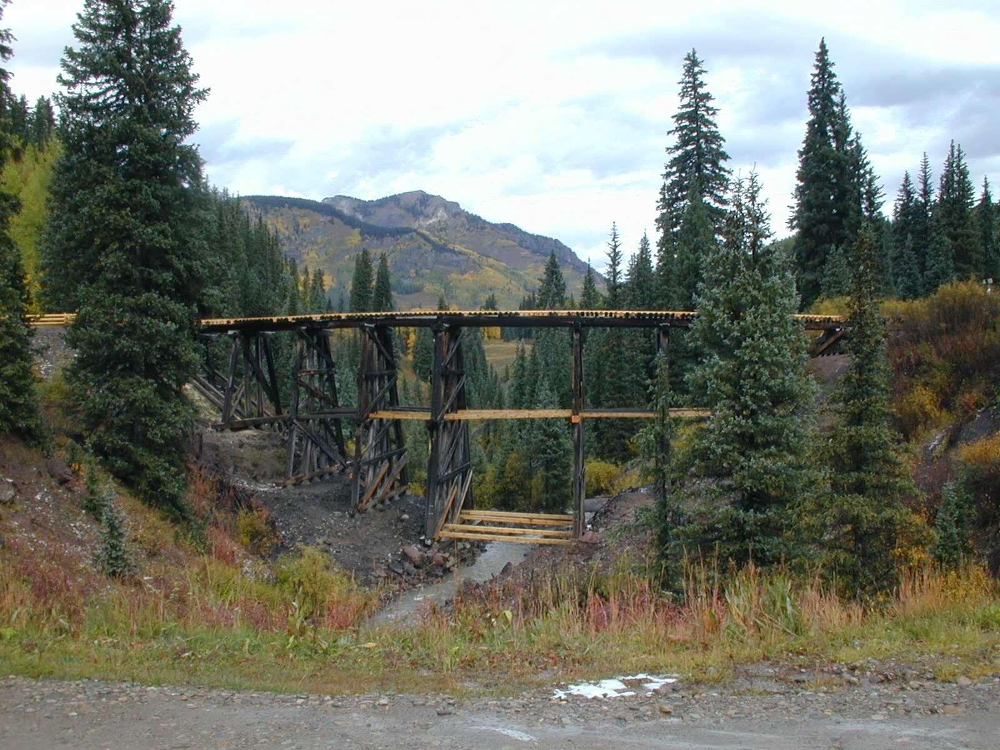
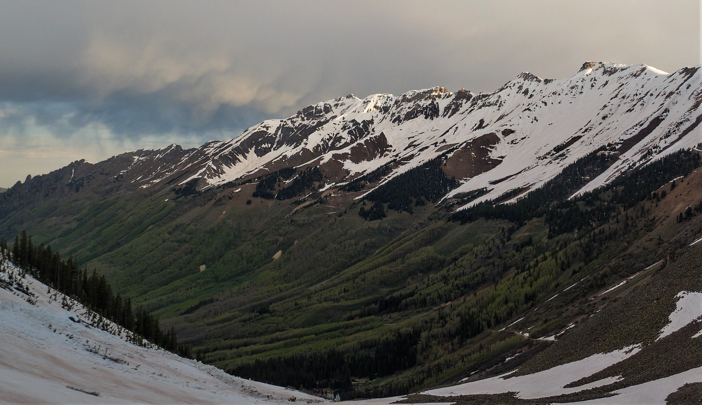
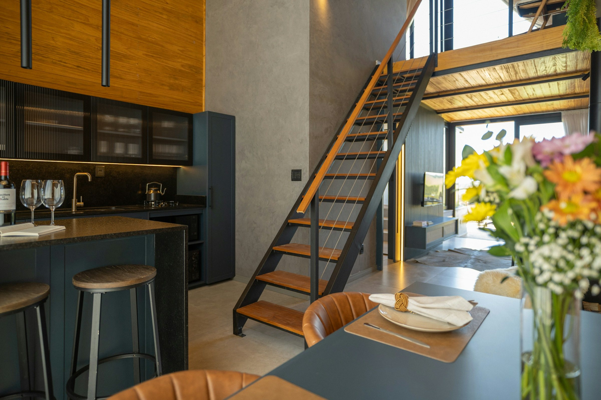
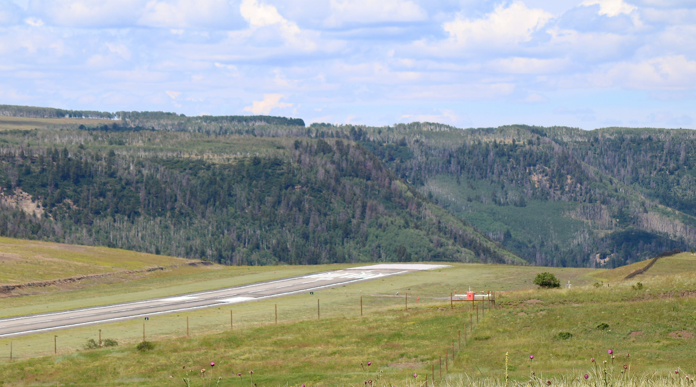

01



Ophir and Trout Lake, Colorado
Homes in the Town of Ophir and around Trout Lake, and what to check before you buy this high.
Ophir and Trout Lake at a glance
Ophir and Trout Lake sit just off CO-145, the San Juan Skyway, about 13 and 15 road miles south of downtown Telluride. Both are above 9,600 feet: the Town of Ophir gives its elevation as 9,625, and Trout Lake lies at about 9,700.
Ophir is a self-governing town of 197 people at the 2020 Census, with its own water system and land use code. Trout Lake, to the southwest, is unincorporated county land around a reservoir about 1.4 miles from Lizard Head Pass. Both are in Telluride School District R-1 and the Telluride Fire Protection District, and both border National Forest.
Saved searches
Each card opens a live search of MLS listings, updated as they change.

01

02

03

04
<!-- IDX_ZONE: homes-for-sale-ophir-co-feed -->
The newest Ophir and Trout Lake listings in one compact row, six to eight homes. Builder places the Showcase hotsheet shortcode here in its compact layout.
Ophir is a home-rule town governed by a General Assembly. The county maps it in two pieces totaling about 151 acres, with National Forest along its boundary, and its parcel records under the Ophir name run from 0.03 to 2.9 acres, half of them about an eighth of an acre or less. The Town writes its own land use code: its Open Space zone district allows only non-motorized, minimal-impact recreation, and OHVs, over-snow vehicles and ATVs are not allowed on Town open space or Town roads (the Town's recreation rules).
Ophir Road, County Road D65, is county-plowed for about 2.1 miles from CO-145 to town. Past town it becomes Ophir Pass, also Forest Service Road 630, a gravel track the Forest Service closes to motor vehicles from December 1 to May 15 to protect the soft roadbed; the county posts its status on its pass conditions page. So in winter, the way in and out of Ophir is the plowed road from CO-145.
Trout Lake is a reservoir at about 9,700 feet, a natural lake enlarged by a dam the Telluride Power Company built in 1894 and rebuilt in 1910 to store water for the Ames hydroelectric plant. In 1891 that plant had sent 3,000-volt alternating current about 3 miles to the Gold King Mine, and the IEEE named it a Milestone in 1988 (IEEE Power and Energy Magazine).
The county maps the Trout Lake subdivision at about 449 acres, zoned as a Planned Unit Development at its sample point and bordering National Forest. North Trout Lake Road, County Road 63A, is county-plowed for about 1.4 miles and privately plowed beyond. The Hope Lake trail, with views of Trout Lake, is one of the area's most popular wildflower hikes.
Lizard Head Pass sits on the line between San Miguel and Dolores counties, and it is one way into the Lizard Head Wilderness, where bikes and motors are not allowed. Lizard Head itself is a 400-foot tower of rotten rock, reputed to be among the most dangerous climbs in Colorado.
From the pass, Galloping Goose Trail #499 runs 17.6 miles toward Telluride, much of it on the old Rio Grande Southern railroad grade and past the line's restored trestle at Trout Lake, for hikers, horses and bikes. Matterhorn Campground, a Forest Service campground on CO-145 between the Ophir turnoff and Trout Lake, has access to the trail.
Day to day
School information is factual and by district. Always confirm a specific address in the district's school finder.
Questions
Yes. Ophir is a home-rule municipality governed by a General Assembly, with its own land use code and water system. Trout Lake, to the southwest, is unincorporated San Miguel County.
No. Ophir Pass is closed to motor vehicles from December 1 to May 15. Ophir Road itself is county-plowed for about 2.1 miles from CO-145 to town.
About 13 road miles from downtown Telluride to Ophir by CO-145, and about 15 to Trout Lake. Telluride Regional Airport is about 12.5 and 14 miles away.
Not on Town roads or Town open space, where the Town of Ophir does not allow OHVs, over-snow vehicles or ATVs.
Nearby



Resources
Contact
Tell him how and when you will use a place up here, and he will tell you what he knows about the road, the water system and the rules for each house before you see it.